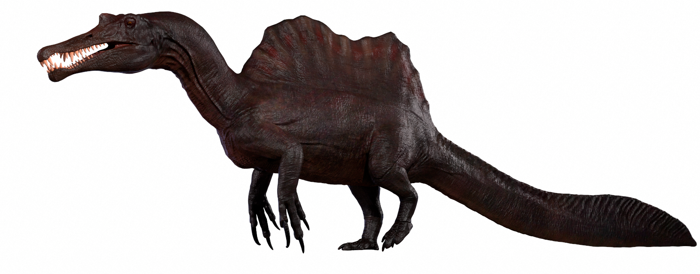
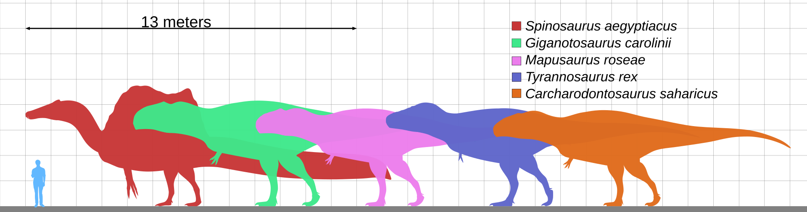
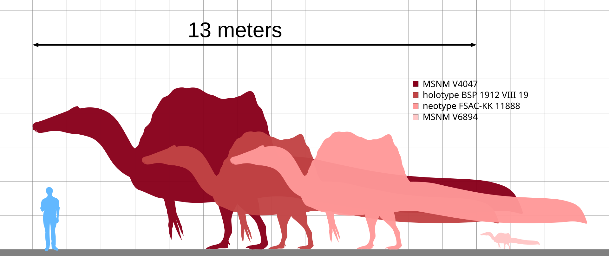
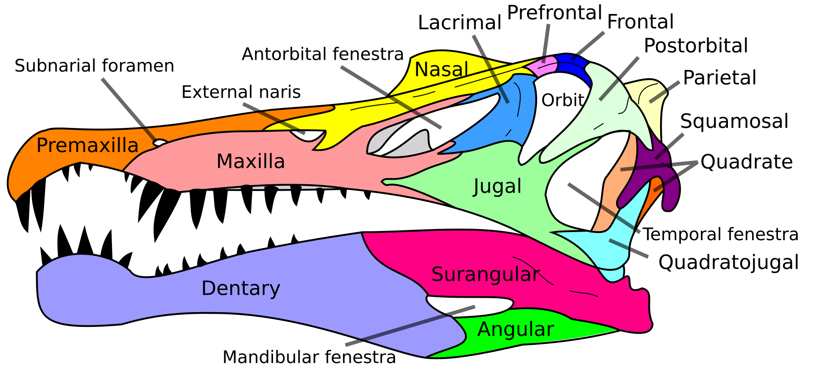
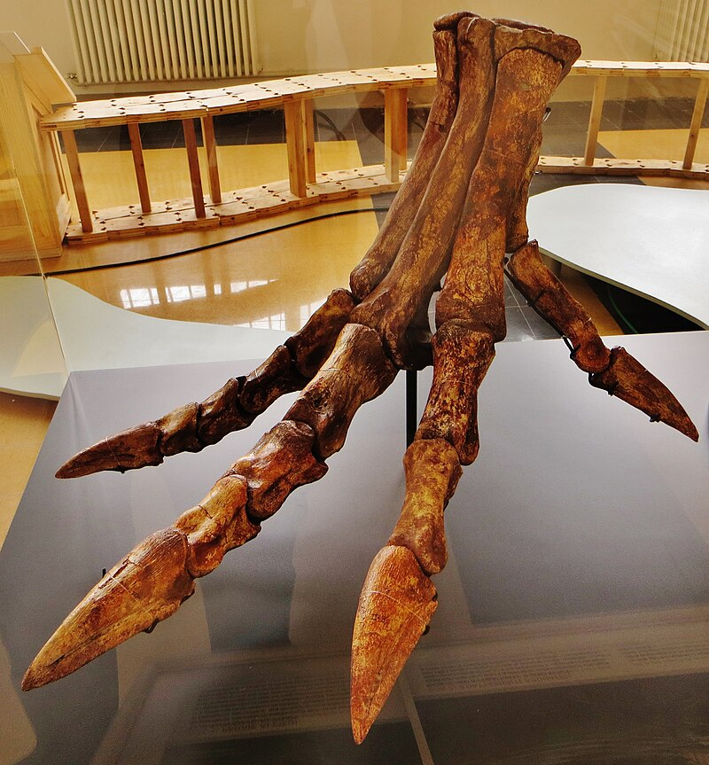
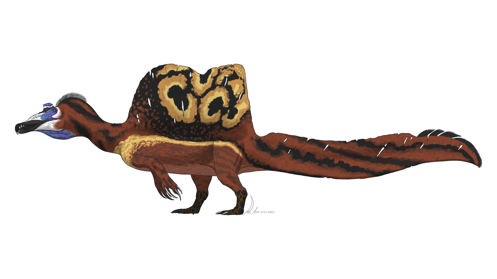
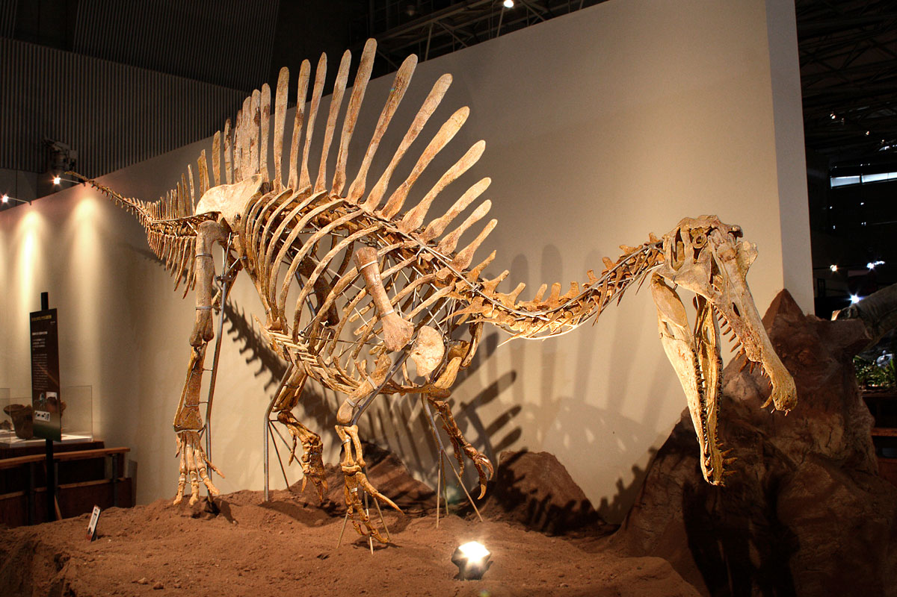

Spinosaurus aegyptiacus («lagarto de espinas de Egipto »), es la única especie válida del género extinto Spinosaurus de dinosaurio terópodo espinosáurido, que vivió a principios del período Cretácico Superior, entre 100 a 95 millones de años, durante el Cenomaniano, en lo que hoy es Egipto y Marruecos. Este género se conoció inicialmente por los restos fósiles descubiertos en Egipto en la década de 1910 y descritos por el paleontólogo alemán Ernst Stromer. Los restos originales fueron destruidos durante los bombardeos de la Segunda Guerra Mundial, pero se ha recuperado material adicional a principio del siglo XXI. No existe claridad de si se trata de una o dos especies representadas por los fósiles reportados en la literatura científica. La especie más conocida es S. aegyptiacus descubierta en Egipto; sin embargo, una posible segunda especie S. maroccanus se descubrió en Marruecos. También se han encontrado restos en Argelia, Túnez y posiblemente de Níger y Libia. La mayoría de las últimas publicaciones consideran que la segunda especie es un sinónimo menor de la primera. El género contemporáneo de spinosáuridos Sigilmassasaurus brevicollis también ha sido sinonimizado por algunos autores con S. aegyptiacus, aunque otros investigadores proponen que sea un taxón distinto. Otro posible sinónimo menor es Oxalaia quilombensis de la Formación Alcântara en Brasil, lo que extendería el rango del génereo hasta Sudamérica.

Spinosaurus pudo ser el más largo de todos los dinosaurios
carnívoros,
más largo aún que
Tyrannosaurus rex
y Giganotosaurus carolinii, a pesar de no compartir la contextura robusta de estos anteriores.
Estimaciones publicadas en 2005, 2007 y 2008 sugieren que tenía 12,6 a 18
metros
de longitud y 7 a 20,9 toneladas de peso. Nuevas estimaciones publicadas en 2014 y 2018, basadas en un espécimen más completo,
respaldaron la investigación anterior y encontraron que el Spinosaurus podría alcanzar longitudes de 15 a 16 metros. Las últimas estimaciones sugieren un peso de 6,4 a 7,5 toneladas.
El cráneo del Spinosaurus era largo, bajo y angosto, similar al de un
cocodrilo
moderno y tenía dientes cónicos rectos sin estrías. Habría tenido extremidades anteriores grandes y robustas con manos de tres dedos,
con una garra agrandada en el primer dígito. Las espinas neurales distintivas del Spinosaurus, que eran largas extensiones de las vértebras, crecían hasta al menos 1,65 metros de largo y probablemente tenían piel que las conectaba,
formando una estructura similar a una
vela,
como la de
Dimetrodon,
aunque algunos autores han sugerido que las espinas estaban cubiertas de grasa y
formaban una
joroba.
A esta estructura se le han atribuido múltiples funciones,
incluyendo
termorregulación
y exhibición. Los huesos de la cadera de Spinosaurus estaban reducidos y las piernas eran muy cortas en proporción al cuerpo. Su cola larga y estrecha estaba profundizada por espinas neurales altas y delgadas y
cheurones
alargados, formando una aleta flexible o una estructura similar a una paleta. Se cree que pudo haberse alimentado de pescado; los restos encontrados hasta ahora sugieren que permanecía tanto en el agua como
en tierra, como un cocodrilo moderno.
Se sabe que Spinosaurus comía pescado, y la mayoría de los científicos creen que cazaba presas tanto terrestres como acuáticas. Los datos obtenidos sugieren que era muy probablemente semiacuático y vivía tanto en la tierra como en el agua al igual que
los cocodrilos modernos. Los huesos de las piernas de Spinosaurus tenían osteosclerosis, alta densidad ósea, lo que permitía un mejor control de la flotabilidad y la cola en forma de paleta probablemente se usaba para la propulsión bajo el agua. Vivió
en un ambiente húmedo de planicies intermareales y manglares y bosques junto con muchos otros dinosaurios, así como
peces,
crocodilomorfos,
lagartos,
tortugas,
pterosaurios
y
plesiosaurios.
Tamano
 Desde su descubrimiento en 1915, Spinosaurus fue uno de los pretendientes para ser el terópodo más grande conocido. Tanto Friedrich von Huene en 1926 como Donald F. Glut en 1982, lo incluyeron entre los terópodos más grandes con 15 metros de longitud y un peso superior a las 6 toneladas. En 1988, Gregory S. Paul también lo consideró como el terópodo más grande con 15 metros de largo, pero estimando un peso inferior, de solo 4 toneladas. Dal Sasso et al. en 2005, asumieron que Spinosaurus y Suchomimus compartían las mismas proporciones corporales en relación con la longitud de su cráneo, calculando de ese modo que Spinosaurus tenía entre 16 y 18 metros de longitud y entre 7 y 9 toneladas de peso. Las estimaciones fueron criticadas porque la estimación de la longitud del cráneo era incierta y asumiendo que la masa corporal aumenta con el cubo de la longitud del cuerpo, escalando a Suchomimus, que tenía 11 metros de largo y 3,8 toneladas métricas en masa, al rango de longitudes estimadas de Spinosaurus produciría una masa corporal estimada de 11,7 a 16,7 toneladas métricas. François Therrien y Donald Henderson, en un artículo de 2007 usando una escala basada en la longitud del cráneo, desafiaron las estimaciones previas del tamaño del Spinosaurus , encontrando que la longitud era demasiado grande y el peso demasiado pequeño. Con base en longitudes de cráneo estimadas de 1,5 a 1,75 metros , sus estimaciones incluyen una longitud corporal de 12,6 a 14,3 metros y una masa corporal de 12 a 20,9 toneladas métricas. Las estimaciones más bajas para Spinosaurus implicarían que el animal era más bajo y más liviano que Carcharodontosaurus y Giganotosaurus.El estudio de Therrien y Henderson ha sido criticado por la elección de los terópodos utilizados para la comparación, la mayoría de los terópodos utilizados para establecer las ecuaciones iniciales eran tiranosáuridos y carnosaurios, que tienen una estructura diferente a la de los espinosáuridos, y por la suposición de que el Spinosaurus el cráneo podría tener tan solo 1,5 metros de largo. El incremento en la precisión para la estimación del tamaño de Spinosaurus requiere el hallazgo de fósiles mejor preservados, especialmente de los miembros del animal. Hasta nuevos hallazgos se estima un tamaño desde 15 metros según las partes del cráneo encontradas.
El cráneo tenía un hocico estrecho repleto de dientes cónicos rectos que carecían de estrías. Había seis o siete dientes, uno a cada lado del frente de la mandíbula superior, en los huesos premaxilares, y detrás de ellos otros doce en ambos maxilares. El segundo y tercer diente en cada lado en la mandíbula superior eran perceptiblemente más grandes que el resto de los dientes de los premaxilares, existiendo un espacio entre ellos que era ocupado por las piezas más grandes del maxilar anterior. El extremo del hocico que sostenía los grandes dientes anteriores se ensanchaba en forma de roseta, similar a la de los gaviales modernos. Además tenía una pequeña cresta delante de los ojos parecida a la de Ceratosaurus. También se podría decir que tiene la boca parecida a la de los cocodrilos.
Usando las dimensiones de tres especímenes conocidos como MSNM V4047, UCPC-2 y BSP 1912 VIII 19, y asumiendo que la parte postorbital del ejemplar MSNM V4047 tenía una forma similar a la del cráneo de Irritator, Dal Sasso et al. en 2005 estimaron que el cráneo de Spinosaurus tenía 1,75 metros de longitud. Los resultados de Dal Sasso et al. fueron cuestionados debido a que la forma del cráneo puede variar entre las especies de espinosáuridos. Las estimaciones más recientes sugieren una longitud de 1,6 a 1,68 metros. La estimación de la longitud del cráneo de Dal Sasso y sus colegas se cuestiona porque las formas del cráneo pueden variar entre las especies de espinosáuridos y porque MSNM V4047 puede no pertenecer a Spinosaurus.
Como espinosáurido, Spinosaurus habría tenido un cuello largo y musculoso, curvado en forma de sigmoide o S. Sus hombros eran prominentes y las extremidades anteriores grandes y robustas, con tres dedos con garras en cada mano. El primer dedo o "pulgar" habría sido el más grande. Spinosaurus tenía falanges largas y solo garras algo recurvadas, lo que sugiere que sus manos eran más largas en comparación con las de otros espinosáuridos...
  